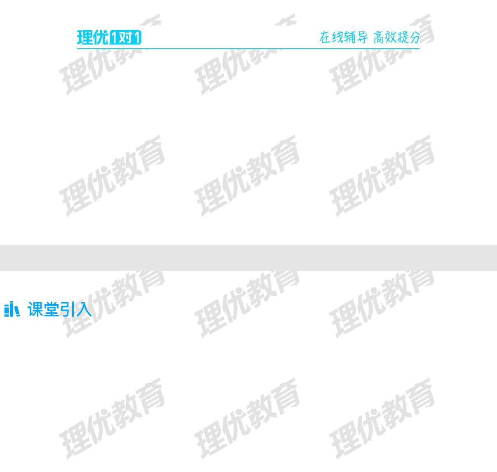
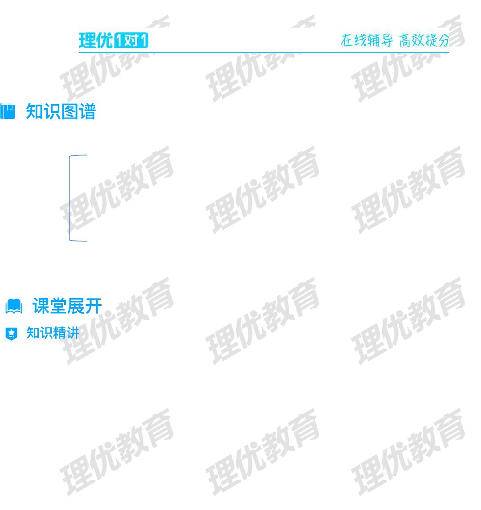
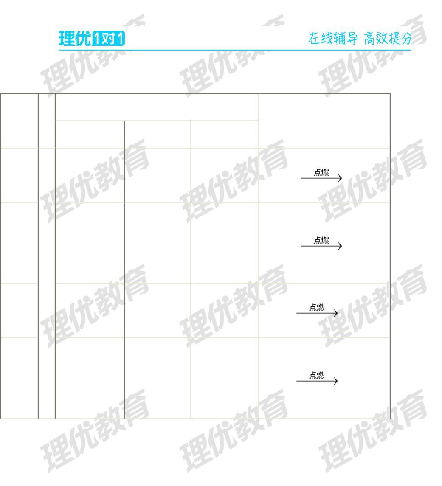
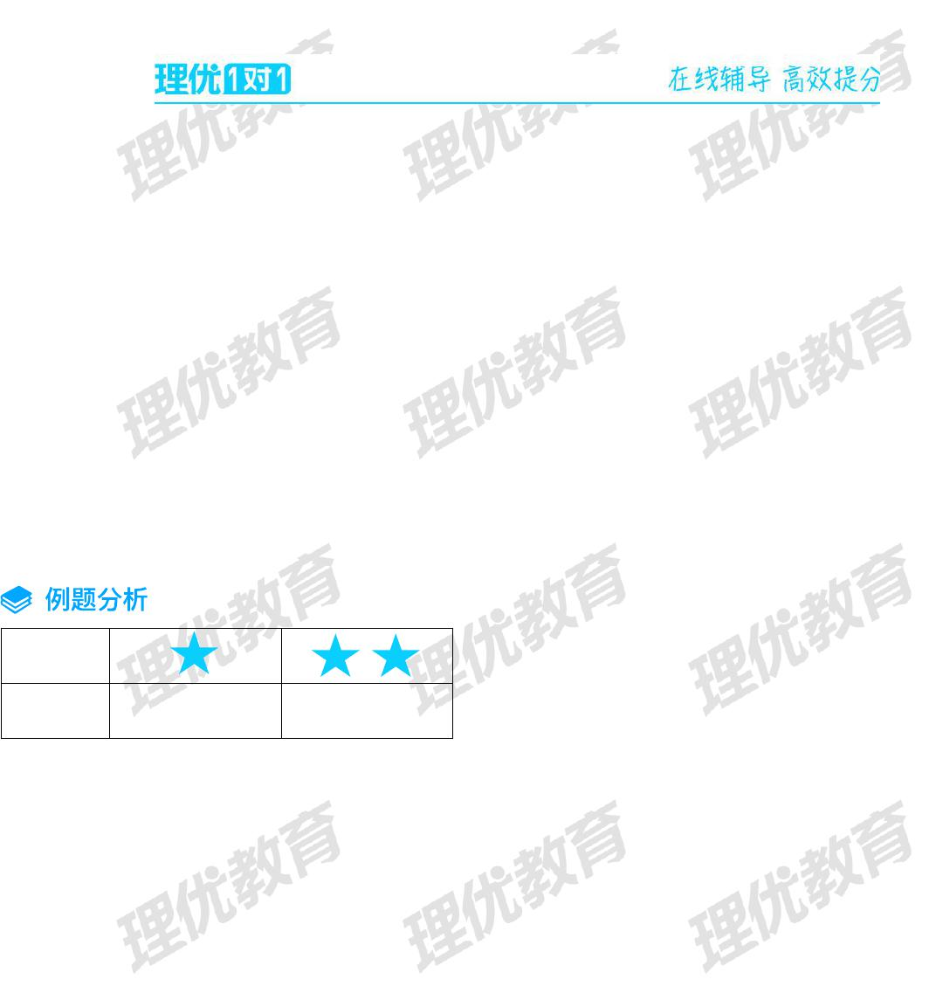
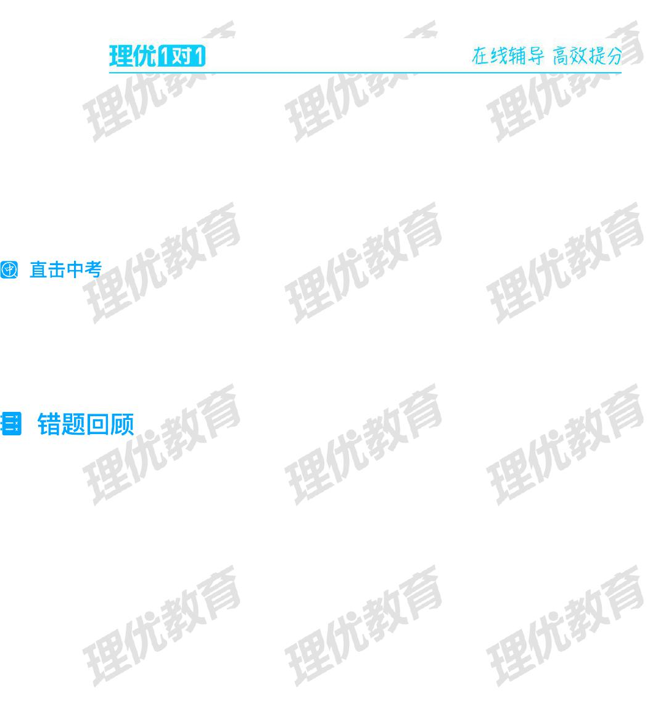
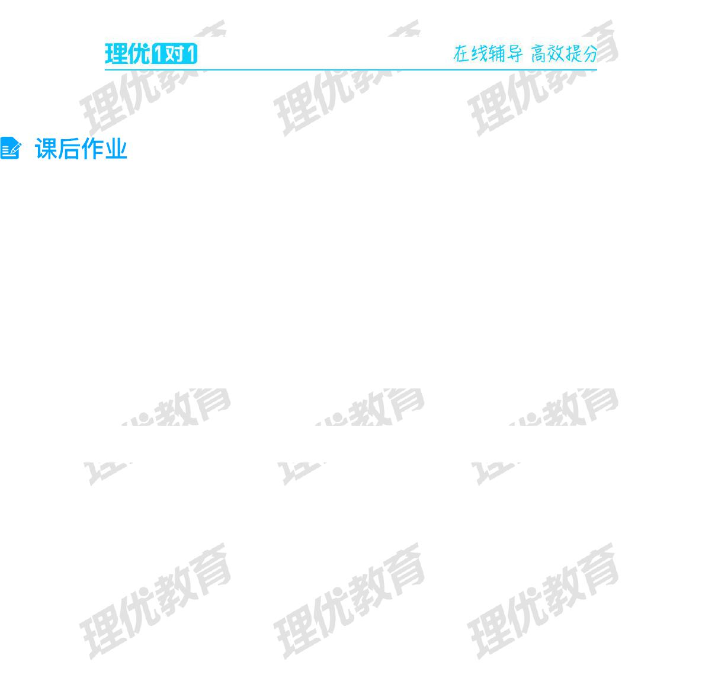

第
1
页
学 科：化学 教材版本：
学员年级：九年级 课 时 数：45min
课 题
氧气的性质（基础）
教学目标
掌握氧气的理化性质；
教学内容
氧气都有什么用途呢？

第
2
页
氧气的理化性质
氧气的性质
氧气的用途
要点一、氧气的物理性质
在通常状况下，氧气是一种无色无味的气体。在标准状况下，氧气密度比空气略大，不易溶于水。
在降温，加压的条件下，氧气可以变为淡蓝色液体和淡蓝色雪花状的固体。工业生产的氧气，一般以液态形

第
3
页
式贮存在蓝色钢瓶中。
【要点诠释】
1.氧气不易溶于水，不等于氧气不溶于水，只是溶解较少而已。河水、海水中的鱼虾等能生存，可以证明自然界的
水中溶有氧气。
2.在标准状况下，氧气的密度为 1.429g/L,比空气的密度（1.293g/L）大，利用这一性质可推出收集氧气的方法之
一是向上排空气法。
要点二、氧气的化学性质
氧气是一种化学性质比较活泼的气体。在一定条件下可以和许多物质发生化学反应，同时放出热量。氧气具
有氧化性，是一种常见的氧化剂。
氧气与物质发生反应的现象等方面的对比：

第
4
页
反应物
条
件
反应现象
化学反应的文字表达式
在空气中燃烧
在氧气中燃烧
反应后
木炭和
氧气
点
燃
持续红热，放出热
量
剧烈燃烧，发出
白光，放出热量
生成使澄清石灰
水变浑浊的气体
碳+氧气 二氧化碳
硫磺和
氧气
发出微弱的淡蓝
色火焰，放出热量
发出明亮的蓝紫
色火焰，放出热
量
生成有刺激性气
味的气体
硫+氧气 二氧化硫
红磷和氧
气
发出黄色火焰，放
出热量
发出耀眼的白
光，放出热量
产生大量白烟
磷+氧气 五氧化二磷
铁丝和
氧气
灼烧至红热，离火
后迅速变凉（不能
燃烧）
剧烈燃烧，火星
四射，放出热量
生成黑色固体
铁+氧气 四氧化三铁
第
5
页
【要点诠释】
1.氧气支持燃烧，但其本身无可燃性；物质燃烧一般要发光放热。
2.根据可燃物在氧气中燃烧比在空气中燃烧更剧烈（如硫），还有在空气中不燃烧的物质却可以在氧气中燃烧（如
铁），可得到如下结论：（1）可燃物燃烧剧烈程度与氧气的浓度有关；（2）反应的剧烈程度与可燃物和氧气的
接触面积有关。
3.做硫、磷等物质在氧气中燃烧的实验时，盛有可燃物的燃烧匙应自上而下慢慢伸入到集气瓶的中下部；如果迅速
伸入到瓶底，物质燃烧放出的热量使氧气受热膨胀，大量氧气逸出到瓶外，可燃物将不能持续燃烧。
4.做铁丝燃烧实验时必须用细铁丝，铁丝表面要用砂纸打磨光亮；细铁丝要绕成螺旋状，下端要系根火柴；必须待
火柴快要烧尽时，才可将铁丝伸入集气瓶中。如果火柴一着火就立即伸入瓶内，火柴燃烧会耗尽瓶内的氧气，而
观察不到铁在氧气中燃烧的现象。同时，集气瓶底要预先放一些细沙或水，防止生成物熔化后溅落下来炸裂瓶底。
可燃物不能接触集气瓶壁，否则会引起集气瓶炸裂。

第
6
页
5.有几个概念不要搞混淆。
（1）发光和火焰都是化学变化中伴随的一些现象，但二者是不同的。①光是固体微粒被灼热的结果（如碳在氧气
中燃烧发出白光）；②火焰即火苗，用于气体物质在燃烧时的现象描述（如氢气在空气中燃烧，产生淡蓝色的火
焰；硫磺在常温下是固体，但硫先受热熔化，再汽化成硫蒸气，最后在氧气中燃烧，产生明亮的蓝紫色火焰）。
（2）烟、雾、气三者是不同的，烟是大量固体细小微粒扩散到空气中的现象；雾是气体与水形成的小液滴在空气
中形成的现象；气即气体，条件不变化无论静置多久仍是气体。
（3）白色与无色是不同的，如水是无色的，粉笔是白色的。
难度
题量
1
1
1．（2017•南京中考）下列物质在氧气中燃烧，火星四射，有黑色固体生成的是（ ）
A．硫 B．木炭 C．铁丝 D．红磷

第
8
页
（2017•湖北中考）下列关于氧气的说法正确的是（ ）
A．氧气易溶于水 B．氧气具有可燃性
C．氧气可以支持燃烧 D．空气中氧气含量最大
（2017•黑龙江中考）空气是一种宝贵的资源，空气中能供给呼吸的气体是（ ）
A．氮气 B．氧气 C．二氧化碳 D．氦气
第
9
页
氧气的理化性质
本节课知识答疑
总结三个氧气有关的反应

第
10
页
1.田径赛场上，发令枪响后冒出的白烟其主要成分是( )
A.水蒸气 B.五氧化二磷 C.氧化铜 D.二氧化硫
2.能使带火星木条复燃的气体是( )
A.O
2
B.N
2
C.H
2
D.CO
2
3.2008 年 5 月 8 日北京奥运火炬成功登顶珠穆朗玛峰。为解决登顶人员的呼吸困难，应携带的物质是（ ）
A.氮气 B.氧气 C.二氧化碳 D.水
4.下列物质在氧气中燃烧，能产生明亮的蓝紫色火焰的是（ ）
A.红磷 B.硫粉 C.铁丝 D.氢气
第
11
页